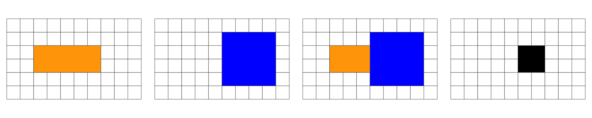

(co1 = AOI::aoi_get(state = "CO", county = "Larimer")$geometry)
#> Geometry set for 1 feature
#> Geometry type: MULTIPOLYGON
#> Dimension: XY
#> Bounding box: xmin: -106.1954 ymin: 40.25778 xmax: -104.9431 ymax: 40.99844
#> Geodetic CRS: WGS 84
#> MULTIPOLYGON (((-105.6533 40.26046, -105.6094 4...
(co_ls = st_cast(co1, "MULTILINESTRING"))
#> Geometry set for 1 feature
#> Geometry type: MULTILINESTRING
#> Dimension: XY
#> Bounding box: xmin: -106.1954 ymin: 40.25778 xmax: -104.9431 ymax: 40.99844
#> Geodetic CRS: WGS 84
#> MULTILINESTRING ((-105.6533 40.26046, -105.6094...Lecture 24
Measures, Predicates, and the DE-9IM
Disolving Geometries Boundaries
Combining geometries preserves their interior boundaries, unioning dissolves the internal boundaries:
(co_geom = co$geometry)
#> Geometry set for 64 features
#> Geometry type: MULTIPOLYGON
#> Dimension: XY
#> Bounding box: xmin: -109.0602 ymin: 36.99246 xmax: -102.0415 ymax: 41.00342
#> Geodetic CRS: WGS 84
#> First 5 geometries:
#> MULTIPOLYGON (((-105.0532 39.79106, -104.976 39...
#> MULTIPOLYGON (((-105.4855 37.5779, -105.4859 37...
#> MULTIPOLYGON (((-103.7065 39.73989, -103.7239 3...
#> MULTIPOLYGON (((-107.1287 37.42294, -107.2803 3...
#> MULTIPOLYGON (((-102.0416 37.64428, -102.0558 3...


sf an ggplot

sf an ggplot

sf an ggplot

sf an ggplot

sf an ggplot

Spatial Sampling
- Spatial sampling is a common task in spatial data science.
Like
rsample,spatialsampleprovides building blocks for creating and analyzing resamples of a spatial data set but does not include code for modeling or computing statistics.


Coordinate Systems: What makes spatial data spatial?
- What makes a feature geometry spatial is the reference system…

Interior, Boundary and Exterior: POINTS

Interior, Boundary and Exterior: POLYGON

Overlap is a LINESTRING: 1D


Overlap is a POLYGON: 2D



No Overlap = FALSE

The Matrix Model
The DE-9IM matrix is based on a 3x3 intersection matrix:

Where:
- dim is the dimension of the intersection and
- I is the interior
- B is the boundary
- E is the exterior
Empty sets are denoted as F
non-empty sets are denoted with the maximum dimension of the intersection {0,1,2}
A simpler (binary) version of this matrix can be created by mapping all non-empty intersections {0,1,2} to TRUE.

Where II would state: “Does the Interior of”a” overlaps with the Interior of “b” in a way that produces a point (0), line (1), or polygon (2)”
Where IB would state: “Does the Interior of”a” overlap with the Boundary of “b” in a way that produces a point (0), line (1), or polygon (2)”
Both matrix forms: - dimensional {0,1,2,F} - Boolean {T,F}
Can be serialize as a “DE-9IM string code” representing the matrix in a single string element (standardized format for data interchange)
The OGC has standardized the typical spatial predicates (Contains, Crosses, Intersects, Touches, etc.) as Boolean functions, and the DE-9IM model as a function that returns the DE-9IM code, with domain of {0,1,2,F}
Illustration

Reading from left-to-right and top-to-bottom, the DE-9IM(a,b) string code is ‘212101212’
Binary Predicates
Collectively, predicates define the type of relationship each 2D object has with another.
Of the ~ 512 unique relationships offered by the DE-9IM models a selection of ~ 10 have been named.
These are include in PostGIS/GEOS and are made accessible via R sf

Spatial Joining
- Joining two non-spatial datasets relies on a shared key that uniquely identifies each record in a table

Spatially joining data relies on shared geographic relations rather then a shared key
Like filter, these relations can be defined by a predicate
As with tabular data, mutating joins add data to the target object (x) from a source object (y).
st_join
In
sfst_joinprovides this joining capacityBy default,
st_joinperforms a left join (Returns all records from x, and the matched records from y)

- It can also do inner joins by setting
left = FALSE.

The default predicate for
st_join(andst_filter) isst_intersectsThis can be changed with the join argument (see
?st_joinfor details).

Clipping
Clipping is a form of subsetting that involves changing the geometry of at least some features.
Clipping can only apply to features more complex than points: (lines, polygons and their ‘multi’ equivalents).

Spatial Subsetting
- By default the data.frame subsetting methods we’ve seen (e.g
[,]) implementsst_intersection